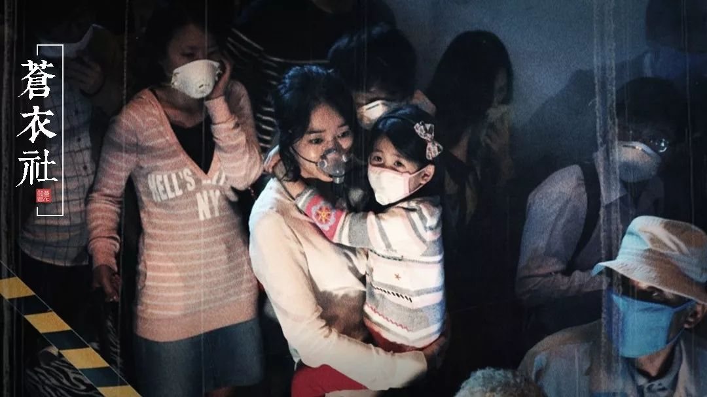
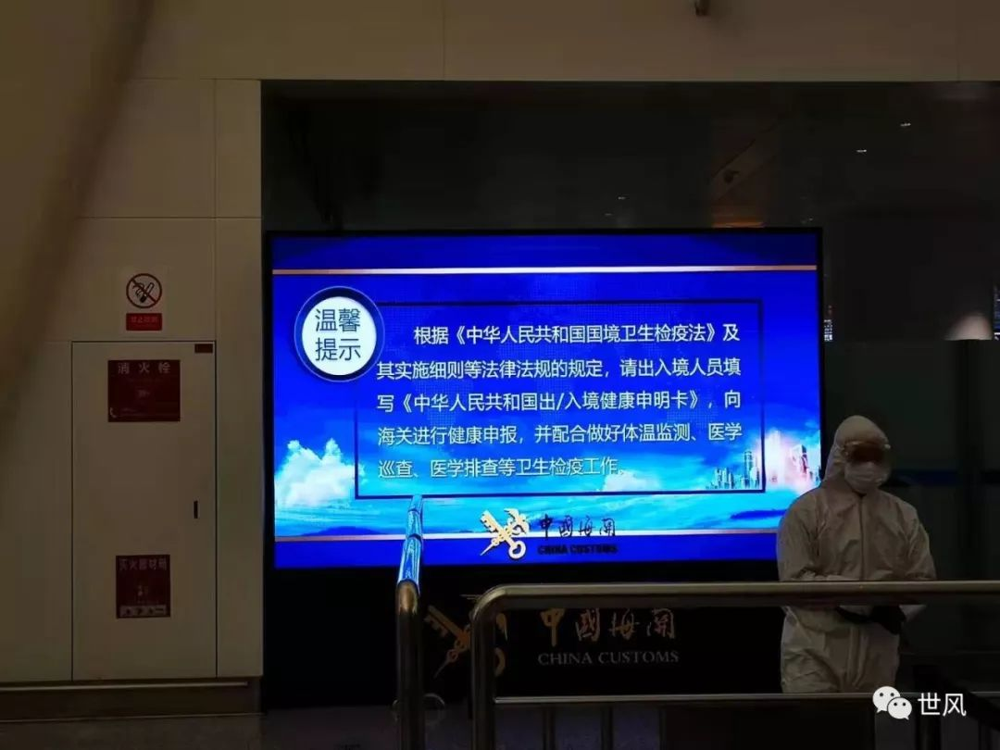
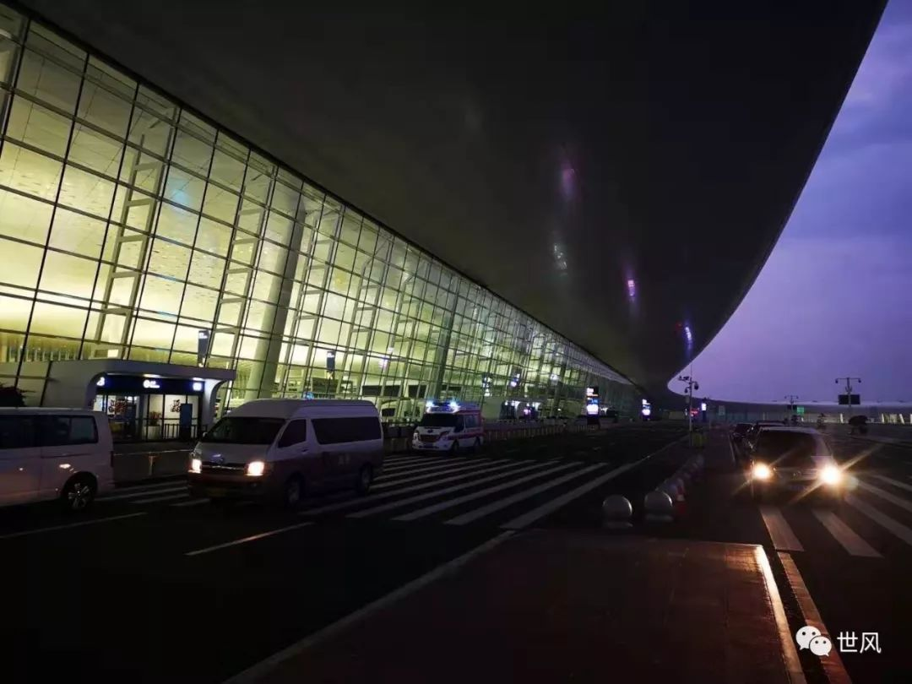
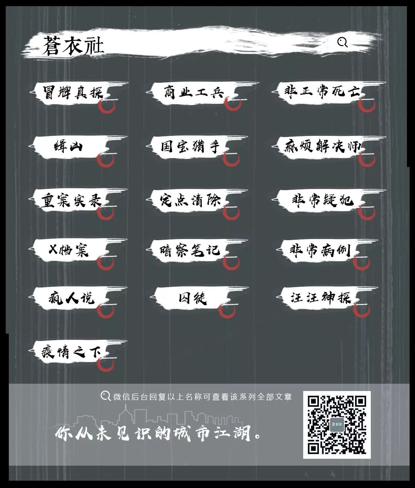

疫区日记 ｜我厌恶这样的懦弱
原文链接 备份链接 自武汉爆发新型冠状病毒疫情之后，多个国家组织起撤侨工作。对于拥有跨国婚姻的人而言，此刻是与家人一同撤离，还是坚守在国内，成为十分痛苦、但又不得不做出的决定。单读作者晓宇就是其中的一员，他的妻子、拥有英德双国籍的安娜， …
以下文章来源于世风 ，作者吕晓宇


【疫情之下】是苍衣社开设的非虚构故事专栏，记录在新型冠状病毒疫情蔓延时，普通中国人的抗疫报告。
大家好，我是脸叔。
随着新冠肺炎的爆发，湖北地区的居民工作和生活都受到很大的影响。不论国人还是外籍人员，在这次疫情下，都有着相同的焦虑。
今天的作者吕晓宇，她的妻子是德英双国籍，疫情爆发后，这名滞留在武汉的外国媳妇儿，徘徊在孩子与丈夫之间，面临着严峻的考验。
这是疫情之下的第 4 篇 抗疫报告
【武汉撤侨】
撰文：吕晓宇
来源：世风（ID：world-views）
时间：2020年1月
全文 3795 字，阅读约需 5 分钟
交通停止后，我督促妻子安娜联系大使馆。她是英德的双国籍，我希望她能把孩子带出去。
一开始，她没当作急事，异常镇定地登记了信息，表现得比我们逆来顺受。她说没关系，从十二月逃到现在，她已视作常态。
半年前，我从英国搬去澳大利亚。年底，受山火威胁，外面是浓烟，只好闭在家中。一月初，回到武汉，疫情爆发，又经历口罩脱销，她只能按部就班地延长禁闭里的生活。
没过多久，传来美国决定包机撤侨的消息，然后是法国开始撤侨，从武汉包车到长沙。安娜说，怎么落后法国人。她给德国大使馆追去几封信，又联系英国使馆。
德国人说，我们正在密切的沟通中。英国人说，我们暂无撤侨的计划。此后，“密切的沟通”成了日常的笑话，代指语焉不详的阻力和困难。
安娜的焦虑始于大年初二，一月二十六日，广西两岁的小孩确诊，而我们的孩子还没到三岁。此前，我们口中说不会传染小孩的自我安慰，倒塌了。
谁都不敢确信，病毒终究打破了年龄的界限。
安娜的父母在德国，他们不眠，每日电话和邮件询问我们的情况，直到英国终于启动了撤侨的计划。
安娜打了电话，录入身份信息和联系方式。挂电话后，她对我说，她把我的信息写进去了，家人可以一起走。我说，安娜，如果你们能走，我会留下来。我父母，姥姥，还在。年轻人最有可能扛过病毒，我要留下来，直到封锁结束。
安娜说她能理解，但家里还是开始一场无休止的讨论。父亲说，能走一个是一个。你留下来，能干什么。我说，我要蹭长假期。
母亲问，我留下来到底有什么目的。父亲沉默了一会儿说，他不想被人说是逃兵。
我接过话，“难得休息一阵，你们成人之美吧。”
担心飞机上交叉感染，落地后安娜还要进行两周的自我隔离。安娜说，从澳大利亚到武汉，在家一个多月。从武汉封城算起，又快一个星期。回去再隔离两周，孩子会疯的。
安娜每想到此，情绪激动，信仰也无法安抚。起初安娜觉得这些遭遇不是针对她，但现在她越来觉得，可能就是。每一次看似不理智的恐慌，到了最后，被证实是合情合理。
我安慰她，不要着急，这些事不是你能改变的，你要一直冷静，要稳住。她说：“你不能教人不急，我能撑得住一时，可不能一直这样撑下去。如果我们早点知情，早点离开，完全可以避免这一切。现在说这些都为时已晚。我厌恶这样的懦弱，我的懦弱，公众的懦弱，所有人的懦弱。如果我这次撑到最后，全是凭借愤怒。”
我说：“我不觉得这里谁是懦弱的。你看，医生和护士在前线战斗，大家努力继续生活，要是我们都留下，我也不会太担心。”
她说：“我不是指的这些。是我们在危机中的恐慌，失去逻辑，扔掉理智。你为什么不去看看国际上武汉肺炎的报道？”
我一直没有接触境外新闻。这和以往对待事件的态度截然相反。可能是每日信息过载，可能是身处暴风眼，觉得没必要。我甚至不知从哪天起，武汉成为国际焦点。
我开始在早上阅读国外报道，憋的一口气，不比晚上看国内新闻少。不像是在写一场灾难，而是写一场报应。撤侨的讨论，质疑为什么有人去武汉，希望回来的人被隔绝得远一点，久一点，以免举国之灾。
官方也放弃快速检测和居家隔离，对归国者强制隔离，限制外人入境，安抚公众的情绪。我明白了安娜所说的懦弱。我担心，即便安全离开，孩子也要因为身份，受到不明的敌意和排斥。
有那么一刻，我心里说，还不如留下来算了，但即刻又放弃了这个赌气的念头。
母亲说，我们生活在其中，反而没有那么的紧张。死亡离我们更近，认识的人确诊，疑似，但没人谈起死亡时，觉得它会立刻临到自己头上。我们紧张时，想的尽是，家里谁感染了，朋友谁感染了，怎么办。即便感染，想到的也是，坏了，亲人和朋友要怎么办，接触的那些人呢。
疫区外的人，担心的死亡，尽是直扑自己来的。仿佛只有这样，恐惧才是真切的。我们和所有人一样，读到个体故事，但在家人面前从来不提，不是否认那些绝望的经历，而是它们离我们近。
撤侨安排，一波三折。一月二十八日，德国派军机来的请求被拒。
“完了。德国人不会来了。”安娜说。
她再去联系英国，发现名字被录错了。对方很礼貌地表示歉意，再次录入信息。
连着两天，安娜挂在嘴边的话是，法国人居然做到了。她如何也不能相信，自己的两个祖国都落后了邻国。
她终日在房间里打电话，发邮件，不放过一条小道消息。她的父母也俨然是生活在中国的时区。终于， 一家人看《别告诉她》时，坐在椅子上的安娜突然立起，我们等她的宣告。
“德国人要来了。”她说，“但是，我们要被强制隔离两周。麻烦不止于此，离开的人要医学检查，有症状则不能走。没有说孩子和家眷可否同行。”
英国撤侨飞机想在二十九号起飞，在机场被困两天，争论的焦点是孩子与家属问题。中方不放行凡是有中国国籍的人，可英国德国坚持保全家庭的原则。
我对父母说，你看，白讨论了这么久，国人本来就是走不掉的。
母亲把大人的口罩改成儿童用，向内折，用线缝上。父亲找开车去机场的上报机构。安娜不情愿地签下了强制隔离的同意书。我为隔离期间准备儿童电影。
在此之前，我们竭尽全力，守住不看电视的原则。编织室内活动，熬过白天。
狗与小孩最难理解禁足的理由，他们尤为无聊和烦躁。孩子的词汇日益见长，在澳洲学会“大火”，在武汉学会了“咳嗽”和“口罩”。他惊奇地发现，我们在为出行准备大量日常限额的饼干和电影。
我说，这是中国新年，还没有过完。
德国飞机临时提前一天，要八点前到机场。安娜早上起来，厨房放《图兰朵》。我说，需要这么煽情吗。她说，这会是漫长的战役。
一月的最后一个夜晚，我们出发。等红绿灯时遇到飙车的摩托。两辆车，一左一右，在空旷的大路上疾驰。
这周，交警日夜不息地追捕飙车党，证明交通秩序未因疫情坍塌。手持名单的检查员在机场收费站，确认后再过军队的岗。门口的防爆检测变成了体温测试。
出发大厅里有韩国人，印度人，孟加拉人，斯里兰卡人，土耳其人，德国人。我多天没见过这么多的人。韩国人最多，他们占住空闲的服务台，做乘客的登记。
三名德国官员出现了，穿橙色马甲。他们先打探了南航空无一人的服务台，但认为即便是非常时刻的占用还是不妥。
消失了十分钟后，他们不知从哪里弄来一张中式的木桌，两把椅子。从包里，掏出德国国旗放在桌角，开始登记。多亏英国人前面的拉锯，孩子家属今天都可以上飞机。我们心中卸下一块石。
没有人知道要等多久，飞机有没有停在玻璃的另一端。体检不过的人，被全身防护服的医生领到门口的救护车。
时间从八点到了十一点，孩子在机场跑乏，也不愿再戴口罩。我把他抱到车上睡觉，远离机场的人群。他非让我抱他在前座睡。过了午夜，我的手臂麻了，也困得睡去，直到手机响起。
三点半，还是没有一点进展。机场冷飕飕的。起初防护严密的人群，这时候被击垮，他们摘下口罩和手套，敞开地吃零食和泡面。又这样过了两个小时，安娜说，再这样待下去，健康人也要生出病来。
韩国人走了，然后是孟加拉人，最后只剩下德国人和土耳其人。我们把行李登记，开始排队体检。
外面已不是彻底的黑，天空开始出现轮廓。安娜怀中的孩子，穿着红色的袄子，像一团火，睁开眼睛说：“回家，爷爷奶奶家。”
我们没人搭话。
临行前，我们没有过多的告别，两天没怎么休息，口干舌燥，头昏脑胀。
我对孩子说，我这次不陪你和妈妈了，要是妈妈不让你看佩奇，你打电话给我。
他说：“一起走。”
我没回答，对安娜说：“你最终还是冷静了，你还一直克制对中方的批评。”
她说：“你们自己人说得够多了。”
我说：“说不定我们下周解除封禁，比你出来的还快些。”
她说：“那我会怒得出离。你好好睡觉，明天可以睡到十点醒了。”
我说：“行了，你们走吧。”
他们消失在白色和黄色防护服的身影里。
回家，太阳起了。我把口罩丢在垃圾桶，衣服扔进洗衣机，冲澡，两遍肥皂。
我全身疲乏，但又十分清醒。
换上衣服，像是完成了一件谈不上喜忧和胜败的使命。房间空了，小床和大床的被子整齐叠在床尾。夜灯还在电插板上。
枕头上有安娜的头发，她又忘了眼霜。屋子里有洗发水和婴儿润肤露的气息，不久它们又会消失在消毒水的味道里。
楼下，玩具散落在客厅，桌上还有没完成的拼图和折纸。晨光应该到了进门的楼梯。在不能出门的日子里，我们允许他拿粉笔，在门口画画，打发时间，对抗无聊。
墙壁地砖楼梯上，留下五颜六色。他专注地给台阶上色，描线，先是红色，覆上绿色，再盖上紫色，周而复始，直到太阳落山，我们喊他上楼吃饭。



*文中配图由作者提供。
*为保护当事人隐私，文中人物均为化名。
—END—
作者 | 吕晓宇
疫情之下
点击链接查看系列故事
征稿：
大家好，我是脸叔。自疫情发生以来，我一直在关注疫区情况。我是在武汉上的大学，那里有很多我的师友，现在我能做的有限，只希望多征集一些故事，为民间发声。
无论你是医务工作者、社会救援者、疫区群众，还是餐饮、交通、宾馆等公共服务人员，我都想倾听你的真实经历，传达诉求。
投稿邮箱：cang1she@163.com
**稿费：1500-3000元/篇
**

原文链接 备份链接 自武汉爆发新型冠状病毒疫情之后，多个国家组织起撤侨工作。对于拥有跨国婚姻的人而言，此刻是与家人一同撤离，还是坚守在国内，成为十分痛苦、但又不得不做出的决定。单读作者晓宇就是其中的一员，他的妻子、拥有英德双国籍的安娜， …
原文链接 备份链接 若干年后回望，这一定是一段值得铭记的日子。因为新型冠状病毒感染的肺炎疫情，许多家庭无法团圆。疫情数据地图的每次刷新都令人揪心。我们和千万武汉人在一起，这不只是一句安慰，因为没有人能够置身事外。 之前，我们向用户征集这 …
原文链接 备份链接 记者/佟晓宇 编辑/杨宝璐 宋建华 **服务区工作人员在给他们的车消毒 ** 鄂A号车牌从来没有像如今一样惹眼。 1月23日，因为新型冠状病毒引起的肺炎，武汉切断对外交通。全市城市公共交通暂停运营，无特殊原因市民不得 …
原文链接 备份链接 文 | 三明治016 车子缓缓驶近村口。 一根彩带揉搓成的细长绳子，挂在门口两个石狮子上，挡住了进村的路。 因为新型冠状病毒影响，正月初七这天，往年返京最高峰的日子，北京多个村庄、多个社区却相继曝出拒绝租客进门的规 …
原文链接 备份链接 开启更有意思的武汉！请点击上方优良better →点击右上角“…” → “设为星标 ” 1月26日，湖北省人民政府新闻发布会上，武汉市长周先旺戴着口罩，疲惫地说出：“因春节因素和疫情因素，大约有500多万 …